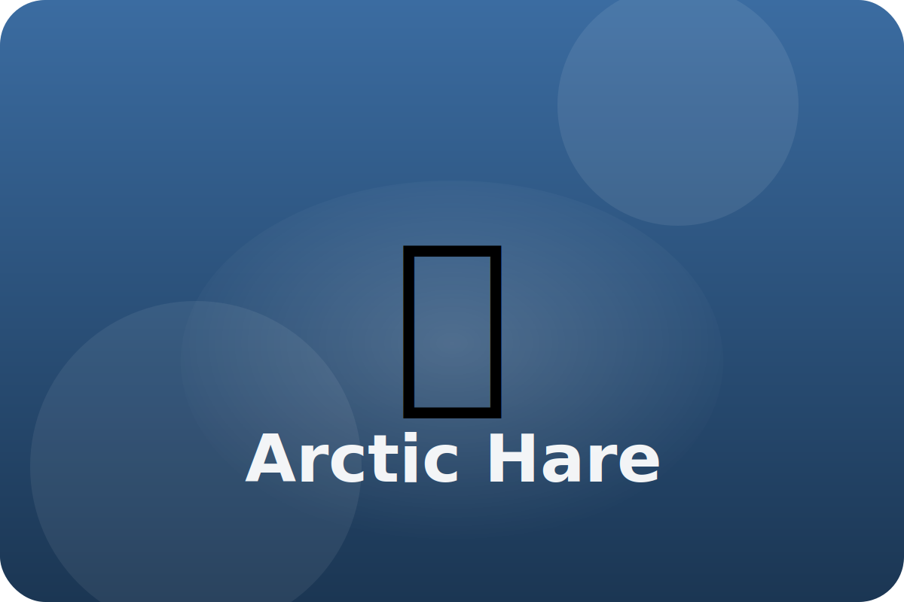

Tundra
Ready to dash
Arctic hares huddle together for warmth and leap across snow to escape foxes and owls.
Thick Fur
Dense fur covers their bodies, even their noses, to block freezing winds.
Powerful Legs
Long back legs let them run up to 40 miles per hour over snow.
Seasonal Color
White winter fur turns gray-brown in summer for camouflage.
Keep exploring the Arctic Hare
Watch the Arctic Hare in action
Learn About Arctic Hares | Fun Animal Facts